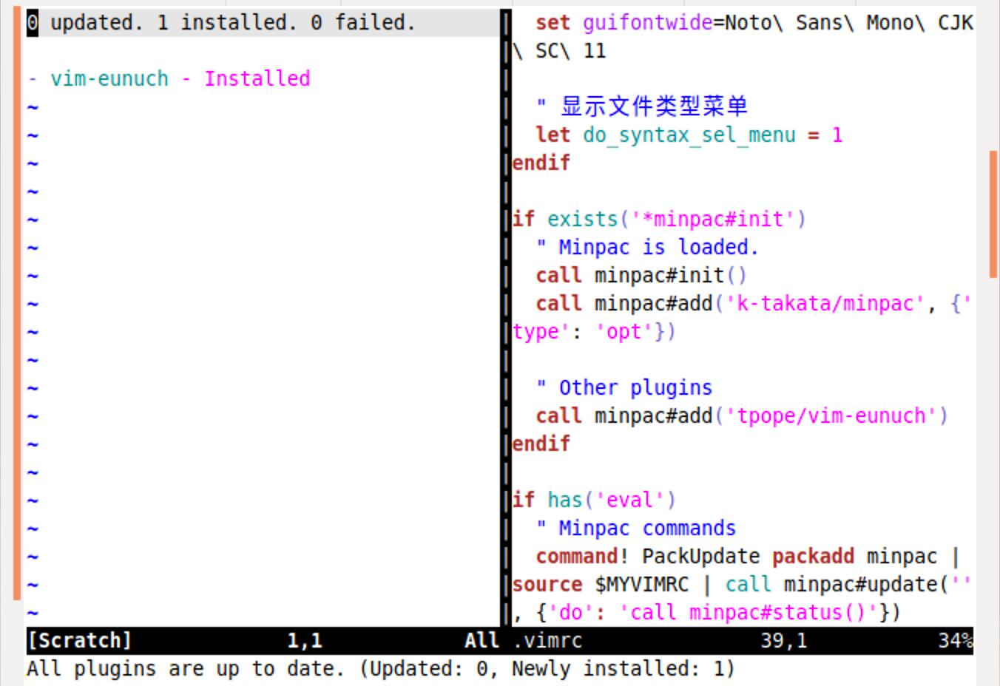
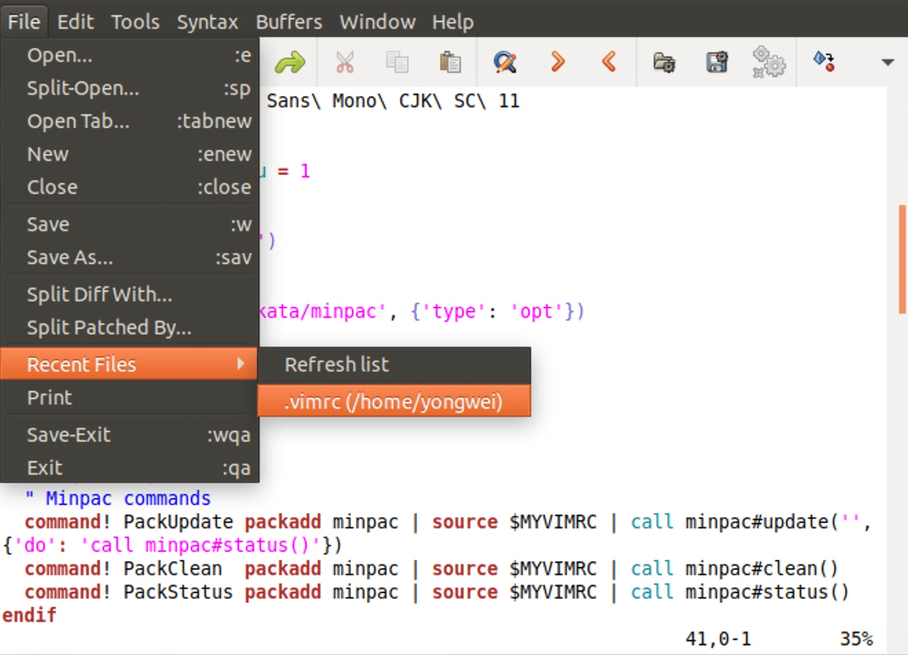

- 00 导读 池建强：Vim 就是四个字“唯快不破”.md.html
- 00 开篇词 我们为什么要学 Vim？.md.html
- 01 各平台下的 Vim 安装方法：上路前准备好你的宝马.md.html
- 02 基本概念和基础命令：应对简单的编辑任务.md.html
- 03 更多常用命令：应对稍复杂的编辑任务.md.html
- 04 初步定制：让你的 Vim 更顺手.md.html
- 05 多文件打开与缓冲区：复制粘贴的正确姿势.md.html
- 06 窗口和标签页：修改、对比多个文件的正确姿势.md.html
- 07 正则表达式：实现文件内容的搜索和替换.md.html
- 08 基本编程支持：规避、解决编程时的常见问题.md.html
- 09 七大常用技巧：让编辑效率再上一个台阶.md.html
- 10 代码重构实验：在实战中提高编辑熟练度.md.html
- 11 文本的细节：关于字符、编码、行你所需要知道的一切.md.html
- 12 语法加亮和配色方案：颜即正义.md.html
- 13 YouCompleteMe：Vim 里的自动完成.md.html
- 14 Vim 脚本简介：开始你的深度定制.md.html
- 15 插件荟萃：不可或缺的插件.md.html
- 16 终端和 GDB 支持：不离开 Vim 完成开发任务.md.html
- 拓展1 纯文本编辑：使用 Vim 书写中英文文档.md.html
- 拓展2 C 程序员的 Vim 工作环境：C 代码的搜索、提示和自动完成.md.html
- 拓展3 Python 程序员的 Vim 工作环境：完整的 Python 开发环境.md.html
- 拓展4 插件样例分析：自己动手改进插件.md.html
- 拓展5 其他插件和技巧：吴咏炜的箱底私藏.md.html
- 结束语 Vim 森林探秘，一切才刚刚开始.md.html
- 捐赠
04 初步定制：让你的 Vim 更顺手
你好，我是吴咏炜。
在前几讲，我已经介绍了不少 Vim 的常用命令，我想你已经略有心得了吧。今天我们转换一下视角，来讲一下 Vim 这个软件本身。
作为一个 Vim 的使用者，光熟悉命令是不够的，你还需要定制 Vim。因为每个人的习惯和需求都是不一样的，一个高度定制化的 Vim 环境能大大提高你的工作效率。
今天，我会先带你了解一下 Vim 的运行支持文件目录结构，然后我们再一起探索 Vim 8 带来的新功能，及如何对 Vim 进行初步配置来使得 Vim 更加好用。
Vim 的目录结构
Vim 的工作环境是由运行支持文件来设定的。如果你想要定制 Vim，就要熟知 Vim 有哪些不同类型的运行支持文件，分别存放在哪里，怎样能快捷地找到它们。Vim 比较有意思的一点的是，虽然运行支持文件是在 Vim 的安装目录下，但用户自己是可以“克隆”这个目录结构的。也就是说，你自己目录下的用户配置，到你深度定制的时候，也有相似的目录结构。所以，我就先从这些文件的目录结构开始讲起。
安装目录下的运行支持文件
Vim 的运行支持文件在不同的平台上有着相似的目录结构。以 Vim 8.2 为例，它们的标准安装位置分别在：
- 大部分 Unix 下面：/usr/share/vim/vim82
- macOS Homebrew 下：/usr/local/opt/macvim/MacVim.app/Contents/Resources/vim/runtime
- Windows 下：C:\Program Files (x86)\Vim\vim82
在这个目录下面，你可以看到很多子目录，如 autoload、colors、doc、pack、plugin、syntax 等等。这些子目录下面就是分类放置的 Vim 支持文件。最常用的子目录应该是下面这几个：
- syntax：Vim 的语法加亮文件
- doc：Vim 的帮助文件
- colors：Vim 的配色方案
- plugin：Vim 的“插件”，即用来增强 Vim 功能的工具
以 syntax 目录为例，当前我在下面看到有 617 个文件，也就是说，Vim 对 617 种不同的文件类型提供了语法加亮支持！这里面的文件去掉“.vim”后缀后，就是文件类型的名字，你可以用类似 :setfiletype java 这样的命令来设置文件的类型，从而进行语法加亮。目录下我们可以看到大家都很熟悉的语言，也有很多我从来都没听说过的东西。
只要有正当的理由，你就可以向 Vim 的作者 Bram 提交改进版本，或是对全新的语言的支持。我就对若干种文件类型提交过补丁，新增了对《计算机编程艺术》中的 MIX 汇编语言的语法支持，并维护着微软宏汇编（MASM）的语法文件。
在图形界面的 Vim 里，你可以通过“语法 > 在菜单中显示文件类型”（“Syntax > Show File Types in Menu”）来展示 Vim 的所有文件类型，然后可以选择某一类型来对当前文件进行设置。这儿的菜单项，跟 syntax 目录下的文件就基本是一一对应的了。
在菜单中显示文件类型这个额外的步骤，可能是因为很久很久以前，加载所有文件类型的菜单是一个耗时的操作吧。在 menu.vim 里，目前有这样的代码：
" Skip setting up the individual syntax selection menus unless
" do_syntax_sel_menu is defined (it takes quite a bit of time).
if exists("do_syntax_sel_menu")
runtime! synmenu.vim
else
…
endif
不知道这段注释是什么年代加上的……但显然，我们的电脑已经不会再在乎加载几百个菜单项所占的时间了。即使我不怎么用菜单，我也找不出不直接展示这个菜单的理由；我可不想在需要使用的时候再多点一次鼠标。
所以，我会在我的 vimrc 文件里写上：
let do_syntax_sel_menu = 1
同理，我会加载其他一些可能会被 Vim 延迟加载的菜单，减少需要在菜单上点击的次数：
let do_no_lazyload_menus = 1
上面两个设置在我的机器上会让我打开 Vim 的速度下降大概 20 毫秒。我想我不在乎这点时间差异……
我们用“:help”命令查看的帮助文件就放在 doc 目录下。我们可以用菜单“编辑 > 配色方案”（“Edit > Color Scheme”）浏览配色方案，相应的文件就在 colors 目录下。
在 plugin 目录下的系统内置插件不多，我们下面就快速讲解一下：
- getscriptPlugin：获得最新的 Vim 脚本的插件（在目前广泛使用 Git 的年代，这个插件过时了，我们不讲）
- gzip：编辑 .gz 压缩文件（能在编辑后缀为 .gz 的文件时自动解压和压缩，你会感觉不到这个文件是压缩的）
- logiPat：模式匹配的逻辑运算符（允许以逻辑运算、而非标准正则表达式的方式来写模式匹配表达式）
- manpager：使用 Vim 来查看 man 帮助（强烈建议试一下，记得使用 Vim 的跳转键
C-]和C-T） - matchparen：对括号进行高亮匹配（现代编辑器基本都有类似的功能）
- netrwPlugin：从网络上编辑文件和浏览（远程）目录（支持多种常见协议如 ftp 和 scp，可直接打开目录来选择文件）
- rrhelper：用于支持
--remote-wait编辑（Vim 的多服务器会用到这一功能） - spellfile：在拼写文件缺失时自动下载（Vim 一般只安装了英文的拼写文件）
- tarPlugin：编辑（压缩的）tar 文件（注意，和 gzip 情况不同，这儿不支持写入）
- tohtml：把语法加亮的结果转成 HTML（自己打开个文件，输入命令“
:TOhtml”就知道效果了） - vimballPlugin：创建和解开 .vba 文件（这个目前也略过时了，我们不讲）
- zipPlugin：编辑 zip 文件（和 tar 文件不同，zip 文件可支持写入）
除了 rrhelper 和 spellfile 属于功能支持插件，没有自己的帮助页面，其他功能都可以使用“:help”命令来查看帮助。查看帮助时，插件名称中的“Plugin”后缀需要去掉：查看 zip 文件编辑的帮助时，应当使用“:help zip”而不是“:help zipPlugin”。
从这些插件当中，我们已经可以看到 Vim 的一些特殊威力了吧。下面的动图里，我们可以看到部分插件功能的展示：


用户的 Vim 配置目录
Vim 的安装目录你是不应该去修改的。首先，你可能没有权限去修改这个目录；其次，即使你有修改权限，这个目录会在 Vim 升级时被覆盖，你做的修改也会丢失。用户自己的配置应当放在自己的目录下，这也就是用户自己的主目录下的 Vim 配置目录（Unix 下的 .vim，Windows 下的 vimfiles）。这个目录应和 Vim 安装目录下的运行支持文件目录有相同的结构，但下面的子目录你在需要修改 Vim 的相关行为时才有必要创建。如果一个同名文件出现用户自己的 Vim 配置目录里和 Vim 的安装目录里，用户的文件优先。
换句话说，修改 Vim 行为最简单的一种方式，就是把一个系统的运行支持文件复制到自己的 Vim 配置目录下的相同位置，然后修改其内容。我自己常常用这种方式来精调 Vim 的语法加亮。
显然，这种方式的缺点（在适当的时候也是优点）是，如果 Vim 的运行支持文件后来被修改/更新了，你也会继续使用你自己目录下的老版本修改版。如果你的修改不只是你自己的临时方案、同时也适合他人的话，最佳做法还是给 Vim 项目提交补丁，让其他所有人都能用上你的修改，这样才是开源的最佳使用方式。
关于 Vim 的公用脚本，这儿再多说几句。Vim 的网站过去是用来集中获取各种脚本——如插件和配色方案——的地方，而 getscriptPlugin 可以帮助简化这个过程。今天你仍然可以使用这个方法，但 Git 和 GitHub 的广泛使用已经改变了人们获取和更新脚本的方式。现在，最主流的分发 Vim 脚本的方式是利用 GitHub，而用户则使用包管理器来调用 Git 从 GitHub（或类似的 Git 库）获取和更新脚本，下面我们很快就会讲到。
理解了 Vim 的目录结构，我们接着来看 Vim 8 的新功能。
Vim 8 新功能
Vim 是一个持续改进中的应用程序。从 Vim 8.1（2018 年 5 月 17 日）到 Vim 8.2（2019 年 12 月 12日），Vim 有 2424 个补丁，也就是说，平均每天超过 4 个补丁。很多 Vim 8 里的大功能，并不是一次性引入，而是在补丁中慢慢引入的。比如，Vim 里现在有终端支持，这个功能从 Vim 8.0.0693 开始引入，到了 Vim 8.1，成为一个正式的大功能。
站在我个人的角度看，从 Vim 7.4 到 Vim 8.2，最大的新功能是：
- Vim 软件包的支持（“
:help packages”） - 异步任务支持（“
:help channel”、“:help job”和“:help timers”） - 终端支持（“
:help terminal”）
今天我们就重点讲一下 Vim 软件包。这是 Vim 8 里带来的一个重要功能，也让我们在扩展 Vim 的时候变得更方便了。
Vim 软件包
Vim 的目录结构有点传统 Unix 式：一个功能用到的文件可能会分散在多个目录下。就像传统 Unix 上 Vim 的文件可能分散在 /usr/bin、/usr/share/man、/usr/share/vim 等目录下一样，一个 Vim 的插件（严格来讲，应该叫包）通常也会分散在多个目录下：
- 插件的主体通常在 plugin 目录下
- 插件的帮助文件在 doc 目录下
- 有些插件只对某些文件类型有效，会有文件放在 ftplugin 目录下
- 有些插件有自己的文件类型检测规则，会有文件放在 ftdetect 目录下
- 有些插件有特殊的语法加亮，会有文件放在 syntax 目录下
- ……
以前我们安装插件，一般是一次性安装后就不管了。安装过程基本上就是到 .vim 目录（Windows 上是 vimfiles 目录）下，解出压缩包的内容，然后执行 vim -c 'helptags doc|q' 生成帮助文件的索引。到了“互联网式更新”的年代，这种方式就显得落伍了。尤其糟糕的地方在于，它是按文件类型来组织目录的，而不是按相关性，这就没法用 Git 来管理了。
Vim 上后来就出现了一些包管理器，它们的基本模式都是相通的：每个包有自己的目录，然后这些目录会被加到 Vim 的运行时路径（runtimepath）选项里。最早的 runtimepath 较为简单，在 Unix 上缺省为：
$HOME/.vim,-$VIM/vimfiles,-$VIMRUNTIME,-$VIM/vimfiles/after,-$HOME/.vim/after
而在有了包管理器之后，runtimepath 就会非常复杂，每个包都会增加一个自己的目录进去。但是，好处也是非常明显的，包的管理变得非常方便。从 Vim 8 开始，Vim 官方也采用了类似的体系。Vim 会在用户的配置目录（Unix 下是 $HOME/.vim ，Windows 下是 $HOME/vimfiles ）下识别名字叫 pack 的目录，并在这个目录的子目录的 start 和 opt 目录下寻找包的目录。
听着有点绕吧？我们看一个实际的 Vim 配置目录的结构就清楚了：
.
├── colors
├── doc
├── pack
│ ├── minpac
│ │ ├── opt
│ │ │ ├── minpac
│ │ │ ├── vim-airline
│ │ │ └── vimcdoc
│ │ └── start
│ │ ├── VimExplorer
│ │ ├── asyncrun.vim
│ │ ├── fzf.vim
│ │ ├── gruvbox
│ │ ├── killersheep
│ │ ├── nerdcommenter
│ │ ├── nerdtree
│ │ ├── tagbar
│ │ ├── undotree
│ │ ├── vim-fugitive
│ │ ├── vim-matrix-screensaver
│ │ ├── vim-rainbow
│ │ ├── vim-repeat
│ │ ├── vim-rhubarb
│ │ └── vim-surround
│ └── my
│ ├── opt
│ │ ├── YouCompleteMe
│ │ ├── ale
│ │ ├── clang_complete
│ │ ├── cvsmenu
│ │ └── syntastic
│ └── start
│ ├── vim-gitgutter
│ └── ycmconf
├── plugin
├── syntax
└── undodir
可以看到，pack 目录下有 minpac 和 my 两个子目录（这些名字 Vim 不关心），每个目录下面又有 opt 和 start 两个子目录，再下面就是每个包自己的目录了，里面又可以有自己的一套 colors、doc、plugin 这样的子目录，这样就方便管理了。Vim 8 在启动时会加载所有 pack/*/start 下面的包，而用户可以用 :packadd 命令来加载某个 opt 目录下的包，如 :packadd vimcdoc 命令可加载 vimcdoc 包，来显示中文帮助信息。
有了这样的目录结构，用户要自己安装、管理包就方便多了。不过，我们还是推荐使用一个包管理器。包管理器可以带来下面的好处：
- 根据文本的配置（一般写在 vimrc 配置文件里）决定要安装哪些包
- 自动化安装、升级和卸载，包括帮助文件的索引生成
在我们这门课程里，我会使用 minpac，一个利用 Vim 8 功能的小巧的包管理器。如果你已经在使用其他包管理器，我接下来讲的两个小节你可以考虑跳过。
安装 minpac
根据 minpac 网页上的说明，我们在 Windows 下可以使用下面的命令：
cd /d %USERPROFILE%
git clone https://github.com/k-takata/minpac.git ^
vimfiles\pack\minpac\opt\minpac
在 Linux 和 macOS 下则可以使用下面的命令：
git clone https://github.com/k-takata/minpac.git \
~/.vim/pack/minpac/opt/minpac
然后，我们在 vimrc 配置文件中加入以下内容（先不用理解其含义）：
if exists('*minpac#init')
" Minpac is loaded.
call minpac#init()
call minpac#add('k-takata/minpac', {'type': 'opt'})
" Other plugins
endif
if has('eval')
" Minpac commands
command! PackUpdate packadd minpac | source $MYVIMRC | call minpac#update('', {'do': 'call minpac#status()'})
command! PackClean packadd minpac | source $MYVIMRC | call minpac#clean()
command! PackStatus packadd minpac | source $MYVIMRC | call minpac#status()
endif
存盘、重启 Vim 之后，我们就有了三个新的命令，可以用来更新（安装）包、清理包和检查当前包的状态。
通过 minpac 安装扩展包
下面我们就来试验一下通过 minpac 来安装扩展包。我们在“Other plugins”那行下面加入以下内容：
call minpac#add('tpope/vim-eunuch')
保存文件，然后我们使用 :PackUpdate 命令。略微等待之后，我们就能看到类似下面的界面：

这就说明安装成功了。我们可以按 q 来退出这个状态窗口。
我们也可以使用 :PackStatus 来重新打开这个状态窗口。要删除一个插件，在 vimrc 中删除对应的那行，保存，然后使用 :PackClean 命令就可以了。愿意的话，你现在就可以试一下。
最近使用的文件
安装好 Vim 软件包之后，我们进一步来实现一个小功能。
Vim 的缺省安装缺了一个很多编辑器都有的功能：最近使用的文件。
我们就把这个功能补上吧。你只需要按照上一节的步骤安装 yegappan/mru 包就可以了（MRU 代表 most recently used）。安装完之后，重新打开 vimrc 文件，你就可以在图形界面里看到下面的菜单了：

估计你很可能会问：如果是远程连接，没有图形界面怎么办？
我们仍可以在文本界面上唤起菜单，虽然美观程度会差点。你需要在 vimrc 配置文件中加入以下内容（同样，我们暂时先不用去理解其意义）：
if !has('gui_running')
" 设置文本菜单
if has('wildmenu')
set wildmenu
set cpoptions-=<
set wildcharm=<C-Z>
nnoremap <F10> :emenu <C-Z>
inoremap <F10> <C-O>:emenu <C-Z>
endif
endif
在增加上面的配置之后，你就可以使用键 <F10>（当然你也可以换用其他键）加 <Tab> 来唤起 Vim 的文本菜单了。如下图所示：

内容小结
本讲我们讨论了 Vim 8 下的基本目录结构和 Vim 8 的软件包。
你需要知道，Vim 的运行支持目录和用户配置目录有相似的结构，用户配置目录下的文件优先于 Vim 安装目录下的文件。因此，在用户配置目录里进行修改，可以在 Vim 版本有变化时保留自己的定制行为。
而 Vim 8 的软件包使得维护 Vim 的扩展变得更为容易，每一个 Vim 软件包都是独立的目录，可以单独安装、修改和升级。包管理器，如 minpac，则可以帮助我们更方便地安装和管理 Vim 软件包。
对于配置文件，适用于本讲的内容标签是 l4-unix 和 l4-windows。
课后练习
请仔细查看一下你的 Vim 安装目录下面的目录结构，对 Vim 的目录结构有一个直观的理解。你也可以打开一些 .vim 文件来看看，初步感受一下 Vim 脚本：如 filetype.vim 里有着 Vim 如何识别文件类型的逻辑，值得大致了解一下——Vim 并不仅仅是用后缀来判断文件类型的！
另外，一定要根据文中的说明，实践一下安装 minpac，及使用 minpac 来安装其他 Vim 软件包（除非你已经在使用另外一个包管理器了）。我们后面会经常性地安装新的软件包，这一部分操作一定需要牢牢掌握。
如有任何问题，请留言和我交流、讨论。我们下一讲见！
© 2019 - 2023 Liangliang Lee. Powered by gin and hexo-theme-book.